Penguin Adventure (夢大陸アドベンチャー, Yume Tairiku Adventure) is the sequel to Antarctic Adventure, and it grows from a 32 KB cartridge to 128. The penguin runs into the screen, dodges what comes at him and has to reach the goal before the clock runs out.
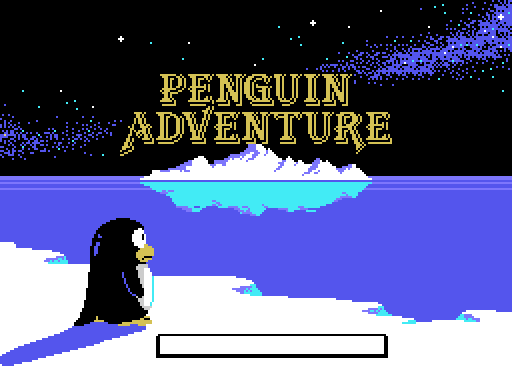
There are two title screens and the cartridge picks one from the BIOS country byte (0x002B). The difference is one extra script, 0xA463, and it only touches the lettering: the background picture is the same.
The cartridge declares thirteen to the Konami Game Master in its second header, the one at 0x4010. The game says otherwise: p02:8328 compares the stage with 0x19, and every per-stage table ends at exactly twenty-four entries.
A stage is walked: 0xE08D is what is left, and it drops by one, in BCD, with every step. Each step takes something from four scripts:
| script | where | what |
|---|---|---|
| terrain | bank 10, 0x8000 (LEVEL 1) and 0x80F9 (LEVEL 2) | one byte every 100 steps; each byte is eight objects from 0x84EA, released one at a time every 6 steps |
| curves | bank 13, 0xADE8 | distance and which way the road bends (0xE0A6) |
| creatures | bank 9, 0xA8FB | class and how far to walk until the next one |
| warnings | bank 13, 0xB046 | the distance at which the next object comes out as a special crevasse |
Every terrain object is a character drawing at sixteen sizes (0x8682, bank 10): on each step p01:68CA erases the previous one with ones and draws the next, and after the sixteenth the slot is freed. With that, the whole road can be walked from the tables:
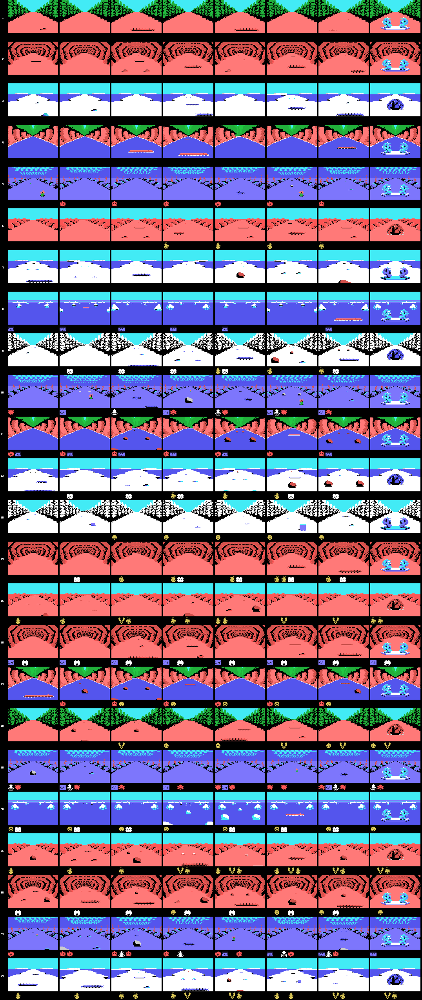
Eight views per stage, from the start to the goal, and under each one the creatures that spawn in that stretch. What is left out, stated plainly: what goes by at the roadsides (p01:6AA8 runs on frames with the speed bar pinned, not on distance), creatures in motion (their path is drawn from the R register) and the other variant of the objects that aim at the player: here he runs down the middle.
All of it is checked against openMSX (tools/coteja.py): the 5,414 objects that came out in the test runs, at the same distance and of the same type, and the screen mirror of 424 dumps, cell by cell, with zero differences.
The title menu lets you choose LEVEL 1 or LEVEL 2, and that choice does not change how hard a section is: it changes the whole terrain script. p01:675B picks the table from 0xE08F, the copy p02:813B makes of 0xE082 when the game starts. Creatures, curves and warnings are the same.
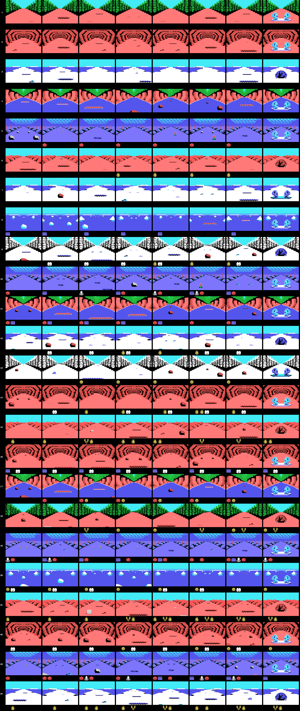
Stages 12, 18 and 24 have a catch: 0x50 away from the goal, p01:6476 loads an eleven-byte record (0x64C6, 0x64D1 or 0x64DC) that sends the distance left and the creature, curve and terrain scripts back. Without the item at 0xE16C those three stages never end.
Eight backdrops for the twenty-four stages, plus one: space. p02:816D builds them piece by piece: the three thirds of characters, the ten pieces of p02:966B —each with its own condition on the backdrop and a 24-byte colour table that p00:440D applies while painting—, the 672-byte map p01:6000 decompresses at 0xEBE0 and the first step of the ground animation.
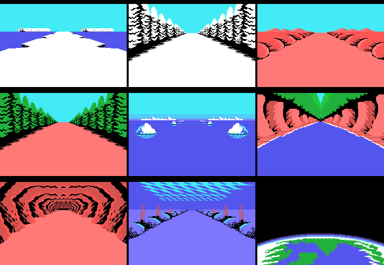
Ice, snowy forest, desert, forest, the sea surface, the river canyon, the cave, the sea bed and space. Built that way they come out at zero differing bytes against the first frame of each stage in openMSX.
Black and seen from behind: the poses in the 0xA91D table carry colour 1. It runs with poses 0-1-0-2 (p02:978E, one every eight frames), and its patterns change with the terrain: p00:57FB loads it from one of three strips —0x8600 on land, 0x78F1 on ice, 0x79C7 at sea and in space— with the cartridge's other painter, pinta_bloque (p00:43B3), which uploads sixteen-byte columns and, on request, the same column mirrored.
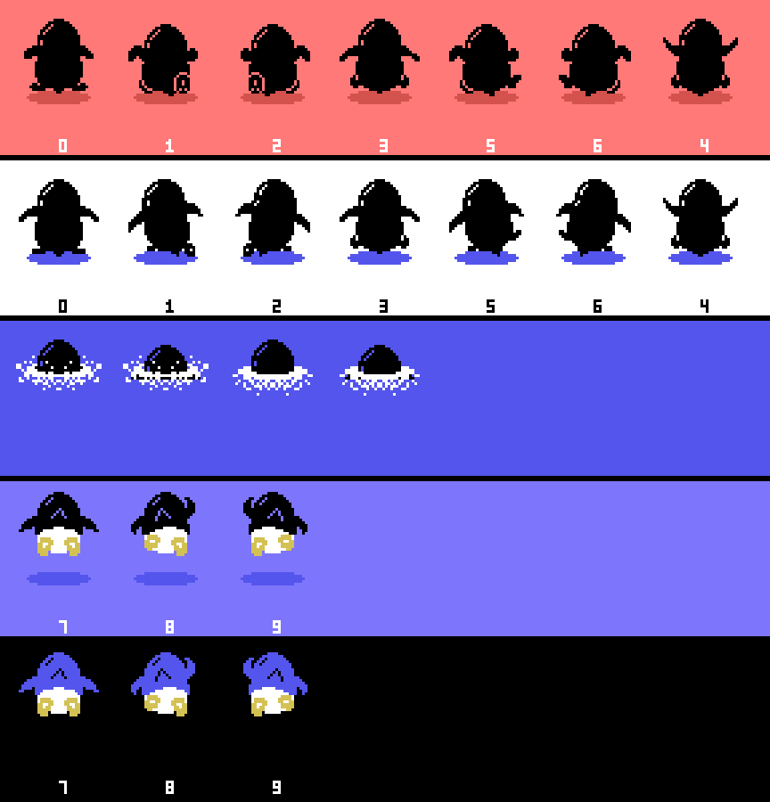
Swimming at the surface there is no pose from the table: p02:9A1D sets pose 10 and swaps the two lower sprites for a splash every sixteen frames. Under the sea, poses 7, 8 and 9 are laid out in a T (p02:9C3A), and in space that same figure wears the colours p03:A778 forces on it.
The three object slots at 0xE310 take fifteen classes (p09:A8D1), and the visible ones pick their drawing by distance: four bands and, if they flap, two drawings per band that alternate with bit 2 of the frame counter (p09:AA86). What each drawing is depends on what the stage loads —p02:9689 loads its own—, so the same class can be one creature in some stages and another elsewhere.
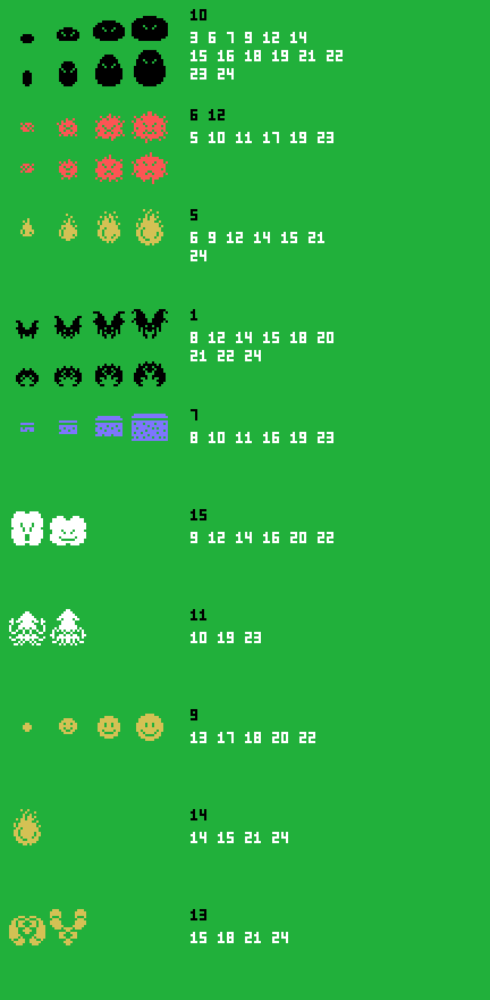
Class 7 is invisible. p09:B8B3 gives it colour 0 —transparent— unless 0xE16A is carried, and then colour 5.
The last 0x30 of every stage are nine cuts (p01:65CF). Four of them load characters and the other five copy onto the map a strip bigger than the one before: whatever is approaching. On the stages whose 1-2-3 counter is 3 —3, 6, 9... up to 24— what approaches is a dinosaur, and the fight follows, state 7.
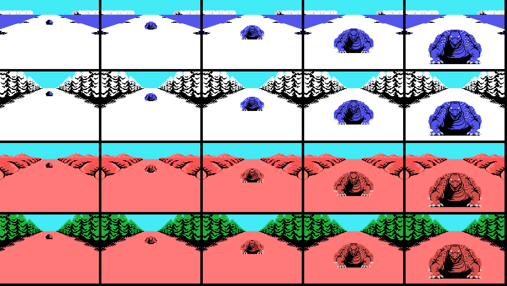
On the rest, the goal: two penguins cheering.
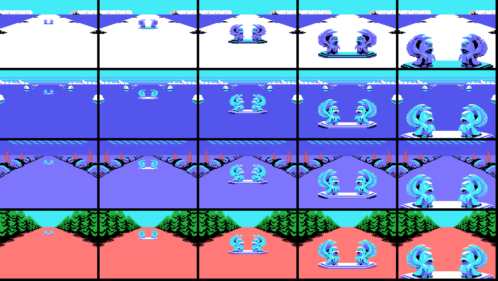
The bonus stage is not a stage: it is backdrop 8, which p03:B602 sets by hand. You go up by touching what flies across above the road: p03:B3A0 sets mode 1 (0xE0A2), picks one of the ten lists with 0xE0AD and leaves the penguin in state 0x10, the one for going up.
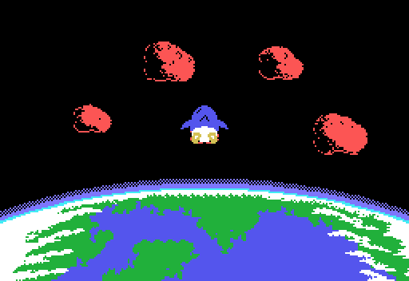
There, objects do not come from the terrain but from the ten lists at 0x81F2 (bank 10). The meteorites are character objects, 0x15 to 0x19, with sixteen drawings each like the road ones; and what you catch are winged fish, the sprite objects 0x1A to 0x1F, with three sixteen-step paths (0xA545, 0xA585 and 0xA5C5). The last three repeat a path but their colour flickers between 6 and 0x0A: those are the extra-life ones.
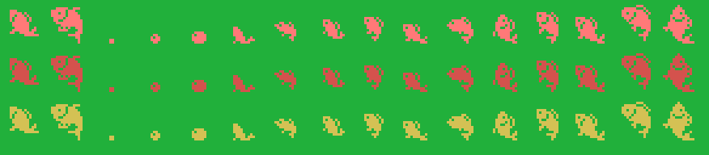
Every return to space is shorter: the ten lengths at 0xB635 go from 0x85 down to 0x40.
The warnings script at 0xB046 flags, when its distance is reached, the next object to come out (p03:B8AB): it comes out as a crevasse carrying two bytes, the mode and the list. Depending on the mode, the crevasse is one of two things.
With mode 2 it is 0x2F, the one that aims at the player. If the penguin falls in and you press down, p02:99A2 moves to state 10: the WARP, a 0x150-step run through backdrop 9 —the cave of backdrop 6 in other colours— with that word on the status bar. When it ends, p03:B94A reads the 17-byte record at 0xB79B picked by the list and adds stages: you come out in another one, with its distance left and its scripts set. There are six, and all six are measured in openMSX:
| crevasse on stage | at (0xE08D) | list | you come out on stage | with distance left |
|---|---|---|---|---|
| 1 | 0x0260 | 0x0A | 6 | 0x0280 |
| 6 | 0x0160 | 0x0B | 9 | 0x0560 |
| 9 | 0x0350 | 0x0C | 12 | 0x0880 |
| 13 | 0x0370 | 0x0D | 15 | 0x0525 |
| 15 | 0x0095 | 0x0E | 18 | 0x0805 |
| 18 | 0x0432 | 0x0F | 21 | 0x1049 |
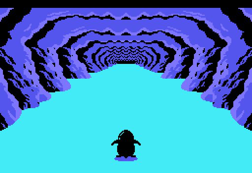
With modes 3, 4 and 5 the warnings-script crevasse is 0x0A or 0x0B, and falling into its middle is enough: p01:72F2 moves to state 12, the shop (---BARTER---). The mode is the shopkeeper, and each one has its own price table (p01:6CC3):
| mode | shopkeeper | prices | how many |
|---|---|---|---|
| 3 | the usual one | those at 0x6FD5 | 18 |
| 4 | the one who warns HEY YOU! YOU MUST BUY SOMETHING FROM ME!! | those at 0x6FE5: double, except item 7 (32, not 34) | 20 |
| 5 | Santa Claus | those at 0x6FF5: all zero; and after the first item p01:6F09 closes the shop: he gives one away | 3 |
The items on offer come from the stage's seven-item list (0xAF90), and those already carried are left out (0xE160 onwards). What each one costs, in BCD and taken from the score:
| item | usual | expensive | Santa Claus |
|---|---|---|---|
| 1 | 19 | 38 | 0 |
| 2 | 15 | 30 | 0 |
| 3 | 10 | 20 | 0 |
| 4 | 8 | 16 | 0 |
| 5 | 12 | 24 | 0 |
| 6 | 13 | 26 | 0 |
| 7 | 17 | 32 | 0 |
| 8 | 20 | 40 | 0 |
| 9 | 18 | 36 | 0 |
| 10 | 22 | 44 | 0 |
| 11 | 11 | 22 | 0 |
| 12 | 14 | 28 | 0 |
| 13 | 21 | 42 | 0 |
| 16 | 23 | 46 | 0 |
Item 13 is 0xE16C, the one that lets stages 12, 18 and 24 end instead of being sent back by the p01:6476 record: only the shops on those three stages sell it, and the stage 12 Santa Claus gives it away.
The 41 shops, with the distance of their warning:
| stage | at (0xE08D) | shopkeeper | items |
|---|---|---|---|
| 1 | 0x0500 | normal | 1 2 3 7 16 |
| 1 | 0x0350 | normal | 1 2 3 7 16 |
| 1 | 0x0200 | expensive, double | 1 2 3 7 16 |
| 2 | 0x0400 | expensive, double | 1 2 3 10 16 9 |
| 2 | 0x0200 | normal | 1 2 3 10 16 9 |
| 2 | 0x0100 | expensive, double | 1 2 3 10 16 9 |
| 3 | 0x0700 | expensive, double | 1 2 3 10 5 |
| 3 | 0x0680 | expensive, double | 1 2 3 10 5 |
| 3 | 0x0420 | normal | 1 2 3 10 5 |
| 3 | 0x0100 | expensive, double | 1 2 3 10 5 |
| 6 | 0x0350 | normal | 1 2 3 8 7 16 |
| 6 | 0x0315 | Santa Claus: free | 1 2 3 8 7 16 |
| 7 | 0x0580 | expensive, double | 1 2 3 16 11 9 |
| 7 | 0x0280 | expensive, double | 1 2 3 16 11 9 |
| 9 | 0x0420 | normal | 7 4 12 5 11 9 |
| 9 | 0x0200 | normal | 7 4 12 5 11 9 |
| 12 | 0x0800 | expensive, double | 13 4 1 2 10 16 |
| 12 | 0x0500 | expensive, double | 13 4 1 2 10 16 |
| 12 | 0x0450 | normal | 13 4 1 2 10 16 |
| 12 | 0x0200 | Santa Claus: free | 13 4 1 2 10 16 |
| 13 | 0x0380 | expensive, double | 1 2 3 8 7 10 |
| 13 | 0x0204 | normal | 1 2 3 8 7 10 |
| 13 | 0x0195 | expensive, double | 1 2 3 8 7 10 |
| 14 | 0x0195 | normal | 1 4 2 8 3 16 |
| 14 | 0x0109 | expensive, double | 1 4 2 8 3 16 |
| 15 | 0x0495 | normal | 1 3 2 6 7 16 |
| 15 | 0x0450 | normal | 1 3 2 6 7 16 |
| 16 | 0x0356 | expensive, double | 1 4 2 9 11 5 |
| 18 | 0x0830 | normal | 13 4 12 6 11 5 |
| 18 | 0x0460 | expensive, double | 13 4 12 6 11 5 |
| 18 | 0x0446 | normal | 13 4 12 6 11 5 |
| 21 | 0x0999 | Santa Claus: free | 1 2 3 6 10 9 |
| 21 | 0x0880 | expensive, double | 1 2 3 6 10 9 |
| 21 | 0x0400 | expensive, double | 1 2 3 6 10 9 |
| 21 | 0x0198 | normal | 1 2 3 6 10 9 |
| 22 | 0x0949 | expensive, double | 1 4 12 9 11 5 |
| 22 | 0x0883 | normal | 1 4 12 9 11 5 |
| 22 | 0x0851 | normal | 1 4 12 9 11 5 |
| 22 | 0x0282 | expensive, double | 1 4 12 9 11 5 |
| 24 | 0x1125 | expensive, double | 13 1 2 6 10 16 |
| 24 | 0x0601 | normal | 13 1 2 6 10 16 |
0xE08B is the time, and it drops by one every 32 frames whether you move or not (p02:922D). Below 0x15 it beeps every other frame, and when the stage ends p02:94D1 turns it into points 0x20 at a time.
What goes down with the terrain is something else, 0xE08D, and the nine end-of-stage cues come from it: at 0x30, 0x25, 0x20, 0x15, 0x10, 8, 5, 2 and 0 from the goal, something different happens (p01:65CF).
Points are spent in two places: the crevasse shops above and the gambling machine.
The shop has six two-byte slots —what it is and what it costs—, a cursor that moves left and right with sound 0x23, and the score acting as money. Buying subtracts in BCD; if you cannot afford it, sound 0x25 plays and nothing happens.
And the gambling machine:
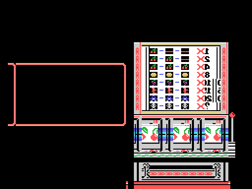
You bet by moving money between the score and a purse —up and down one at a time, left and right ten at a time—, the three reels spin and the stake is multiplied by whatever comes up. The payout table is painted on the machine itself, and it says exactly what the code says.
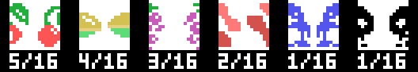
The cherry takes five of the sixteen slots in the table at 0x7B34, so it comes up 31.2 % of the time per reel. And it is the only symbol that counts on its own: one pays ×1, two ×2 and three ×4. The others pay only in threes —×8, ×10, ×15, ×20 and the jackpot—. At least one cherry shows on 67.5 % of the spins.
Five slots at 0xE440, and what they hold decides whether a hit kills:
| what you carry | what it saves you from |
|---|---|
| 0xE1F1 | everything: any hit and any hole |
| 0xE164 | creature classes 6 and 12; one is spent per hit |
| 0xE165 | classes 1 and 13; one is spent per hit |
| 0xE170 | classes 5 and 14; this one is not spent |
| 0xE163 | class 6 of the other creature slots |
| 0xE16B | class 4, which does not kill: it only freezes the game for 0x80 frames |
And the holes in the ground —the class 14 objects— cost a life unless you carry 0xE1F1, 0xE171 or 0xE172. With 0xE1F1 you not only do not fall: the hole changes variant and 768 points drop in.